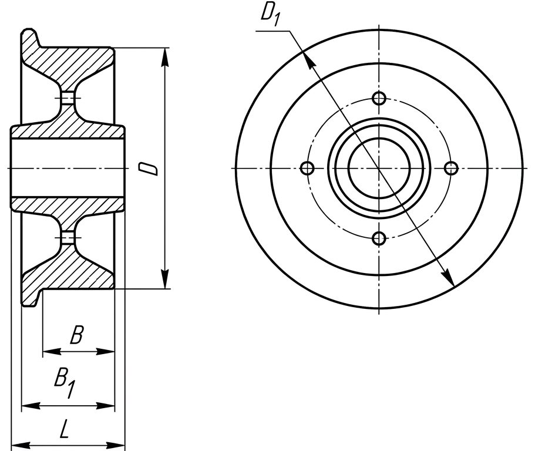

Позвонить: (4842) 75-75-05
Написать сообщение: m-40@inbox.ru
Колеса крановые → Колеса крановые одноребордные К1Р

Ходовые колеса механизмов передвижения грузоподъемных кранов и их грузовых тележек могут выполняться кованными, катанными, штампованными или литыми,
с дальнейшей механической и термической обработкой рабочих поверхностей.
Изготовление колёс из литых заготовок, применяется в случае особых требований в технических заданиях заказчика, индивидуальных особенностей самого колеса:
(наличие ребер жёсткости; необходимости выполнения сложных посадочных мест под сопрягаемые зубчатые венцы; отсутствие возможности получить необходимую форму,
используя другую заготовку).
После механической обработки для получения необходимой твердости поверхности катания, крановое колесо подвергается закалке.
Закалка – это нагрев металла до критической температуры 700..800 °C и быстрое охлаждение в масле, воде или воздушном потоке при температуре
500..300 °C, выполняется несколькими способами:
- Закалка ТВЧ (токами высокой частоты);
- Объемная закалка;
- Сорбитизация.
При закалке токами высокой частоты процесс происходит очень быстро, но глубина закаленного слоя невелика.
Объемная закалка дает хорошую износостойкость, но упрочняется одновременно ступица и обод, что создает определенные проблемы в процессе эксплуатации и
ремонта.
Сорбитизация дает все преимущества объемной закалки, но позволяет улучшить именно необходимую поверхность, доведя её до состояния «сорбита»,
не изменяя структуру металла в тех областях колеса, где в этом нет необходимости.
Сорбитизация с использованием современной автоматизированной печи и инновационной системой охлаждения, позволяет произвести термическую обработку
колеса кранового до твердости дорожки катания 300..390 НВ. Глубина закаленного слоя от 10 до 40 мм в зависимости от диаметра колеса.
Одноребордные ходовые колеса могут применяться в следующих случаях:
- Колея наземного кранового пути не превышает 4 м и обе нитки лежат на одном уровне;
- Краны передвигаются каждой стороной по двум рельсам при условии, что расположение реборды на одном колесе противоположно
расположению реборды на другом колесе (при расположении колес на одной оси);
- У опорных и подвесных тележек кранов мостового типа;
- У подвесных тележек, передвигающихся по однорельсовому пути;
- У грузовых тележек башенных кранов.

Основные размеры колес крановых одноребордных
| Наименование | D | D1 | B | B1 | L | Масса, кг, не более |
| К1Р 200×60 | 200 | 230 | 60 | 75 | 80 | 11,0 |
| К1Р 250×70 | 250 | 290 | 70 | 90 | 90 | 20,0 |
| К1Р 320×80 | 320 | 360 | 80 | 100 | 100 | 31,0 |
| К1Р 400×106 | 400 | 450 | 106 | 130 | 110-130 | 61,0 |
| К1Р 500×125 | 500 | 550 | 125 | 150 | 150 | 113,0 |